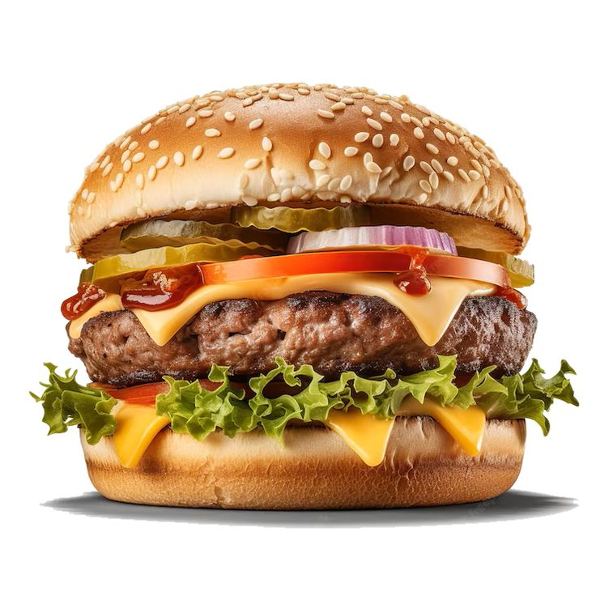

الشعاب المرجانية: بيئتها ساحلية، تعيش في المناطق الضحلة.

الحوت: يعيش في المحيطات العميقة، يتغذى على الأسماك الصغيرة.
الشعاب المرجانية: بيئتها ساحلية، تعيش في المناطق الضحلة.
الحوت: يعيش في المحيطات العميقة، يتغذى على الأسماك الصغيرة.

القرش: مفترس، يعيش في المحيطات العميقة، يتغذى على الأسماك الكبيرة.
| اسم الكائن البحري | بيئته | النظام الغذائي | سلوكه |
|---|---|---|---|
| الحوت | محيط عميق | عشب | سلمي |
| الشعاب المرجانية | ساحلي | عشب | هادئ |
| القرش | محيط عميق | مفترس | هجومي |